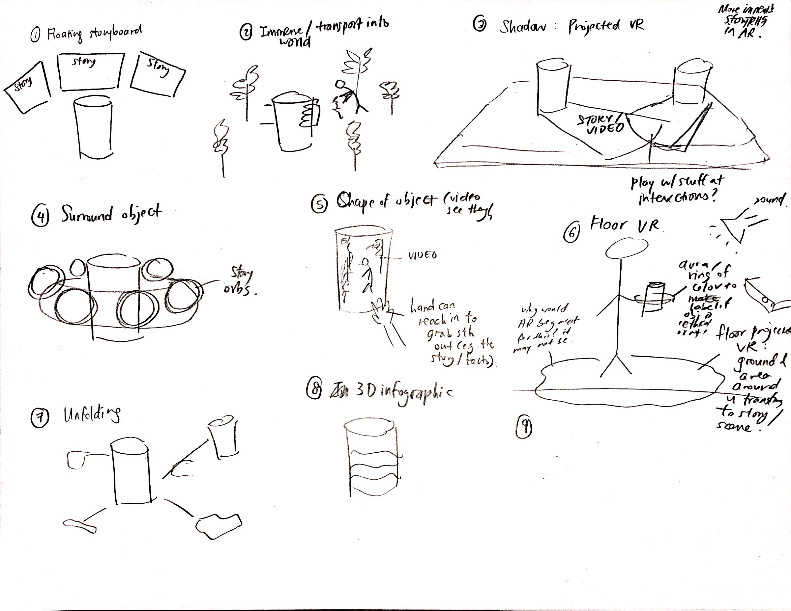
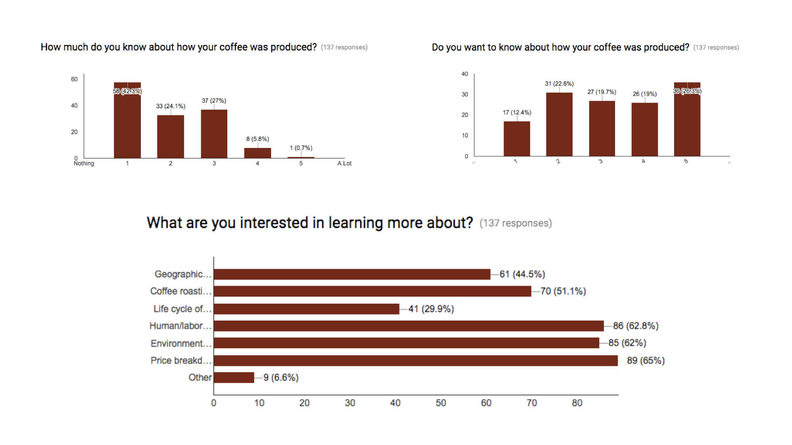
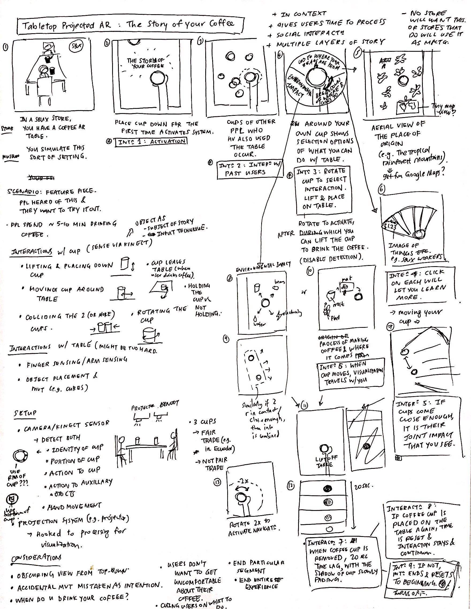
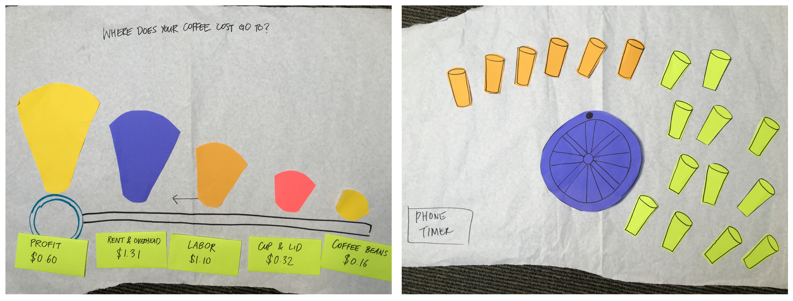
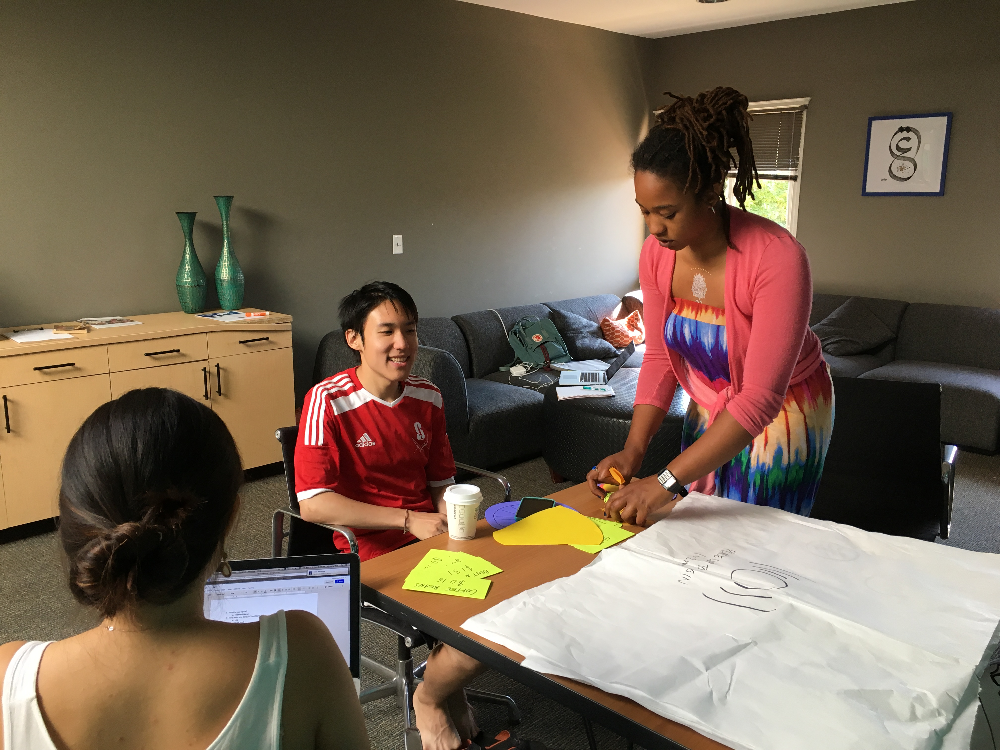
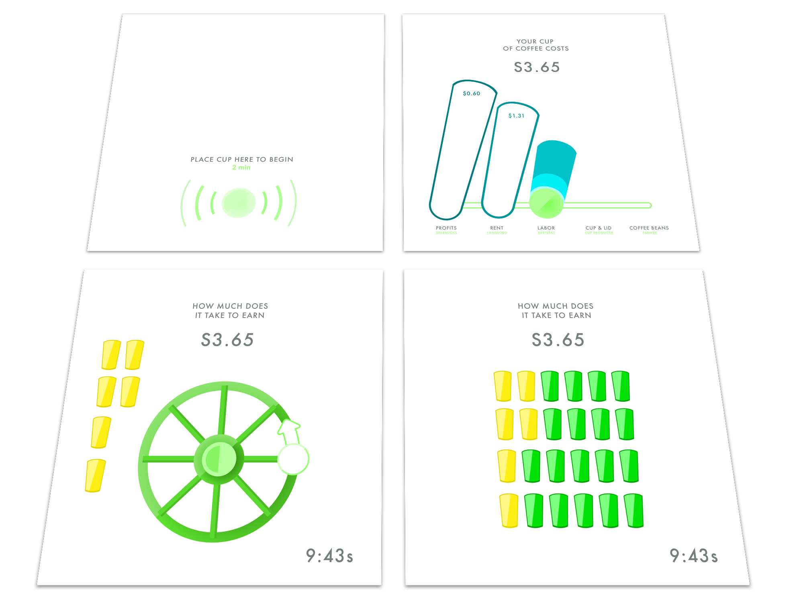

Know your Coffee
Know your Coffee is a proof-of-concept dual-screen tabletop augmented reality system that increases user empathy surrounding the coffee industry.
Imagine you are waiting for your Starbucks cappucino, and you are waiting by the counter. You notice a tabletop AR booth at the counter, and you get curious.
You scan your Starbucks card, which recognizes your order, and interacting with the generic coffee cup on the booth, you learn more about the cost breakdown of your coffee through an interactive timeline, and interact with the coffee farmer from Brazil that harvested your coffee beans.
"Wow, I didn't know 30% of my coffee price went to renting this shop. And fair trade coffee still doesn't seem so fair for the farmer after all," you think when you finish the experience. As you pick up your real cappucino, you look at it with a different light.
- Spring 2016
- Digial UI/UX
- Augmented Reality
- Design x Education
- UI/UX Designer in team of 4
- Journal Paper
Creating consumer awareness around coffee
Many of us tend to purchase goods without understanding the full context behind our purchases, and we unwittingly become slaves to passive consumerism. One of these everyday 'luxury' goods of our 21st century is coffee, and could we perhaps create any understanding around the coffee we purchase daily?
Augmented reality (AR) is an emerging medium that is promising for this end - it is very good at presenting information in context, but how could we also use it as a storytelling tool? Could we take full advantage of the affordances of augmented reality to create a powerful experience that encourages people to understand their purchases better?

Initial Sketching Explorations
After the team decided on our thematic focus of coffee, I started sketching out multiple interaction paradigms across different types of augmented reality: from tabletop AR to Hololens to more esoteric applications inspired by the MIT Media Lab.
-

Understanding User Narratives
Given a 1-week timeframe for needfinding, we prioritized getting as much information from as many individuals as possible. Based on a 140-person survey and 2 observational visits to local coffee joints, we learnt:
- 2-minute Rule
We determined the time between placing an order and getting it was the ideal time for our AR intervention. Customers tended to wait for ~2 min, and thus our AR experience should not exceed that.
- People were curious about their coffee
66% of our survey respondents did not know about how their coffee was produced, and 45% were interested to find out.
- People wanted to learn about social and environmental impact of their coffee.
The 3 most important factors that emerged from our survey were: price breakdown of their coffee, human/labor rights issues surrounding it, and the environmental sustainability.
-

Storyboarding
We chose tabletop augmented reality coupled with Kinect motion sensors as our medium as it afforded an individual experience that could be used socially as well. After deciding that, I proceeded to storyboard possible interactions.
-

Paper Prototyping
In testing our paper prototypes, we learnt which interactions were most compelling and which were most confusing.
-

-

Mockups
I also designed the tabletop screen mockups that were used for the final implementation, and worked closely with the engineers to get it to production. As this was a proof-of-concept application, the focus was more on the interaction than on the refinedness of the visuals.
-

We demonstrated the proof-of-concept application at a showcase open to the Stanford HCI community and their families. To our delight, users of all ages, including 12-year-olds and 50-year-olds, found the 2 main interactions we created entertaining and informative.
Given another cycle of iteration, we would find and design more 'easter egg' microinteractions, since each user's interaction should be as short and impactful as possible.